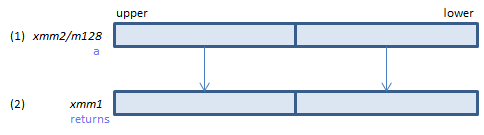
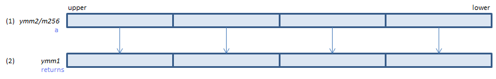
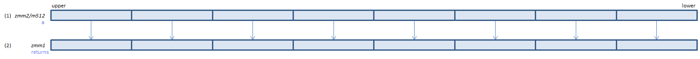

VRCP14PD - ReCiProcal 14 Packed Double
VRCP14PD xmm1{k1}{z}, xmm2/m128/m64bcst (V5+VL
__m128d _mm_rcp14_pd(__m128d a)
__m128d _mm_mask_rcp14_pd(__m128d s, __mmask8 k, __m128d a)
__m128d _mm_maskz_rcp14_pd(__mmask8 k, __m128d a)

For each double, calculate approximate reciprocal of (1) and set the result to (2). (relative error < 2-14)
VRCP14PD ymm1{k1}{z}, ymm2/m256/m64bcst (V5+VL
__m256d _mm256_rcp14_pd(__m256d a)
__m256d _mm256_mask_rcp14_pd(__m256d s, __mmask8 k, __m256d a)
__m256d _mm256_maskz_rcp14_pd(__mmask8 k, __m256d a)

For each double, calculate approximate reciprocal of (1) and set the result to (2). (relative error < 2-14)
VRCP14PD zmm1{k1}{z}, zmm2/m512/m64bcst (V5
__m512d _mm512_rcp14_pd(__m512d a)
__m512d _mm512_mask_rcp14_pd(__m512d s, __mmask8 k, __m512d a)
__m512d _mm512_maskz_rcp14_pd(__mmask8 k, __m512d a)

For each double, calculate approximate reciprocal of (1) and set the result to (2). (relative error < 2-14)
x86/x64 SIMD Instruction List
Feedback